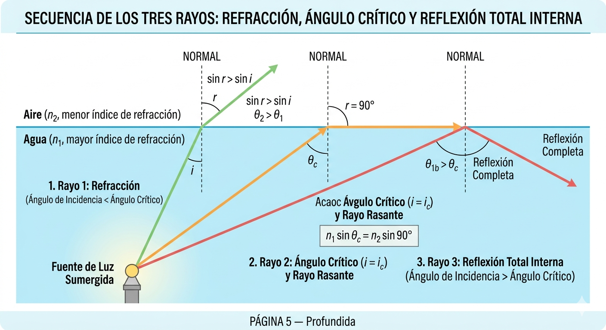

REFRACCIÓN
DE LA LUZ
Índice de Contenidos

Fundamentos de la Refracción
La refracción es el cambio de dirección que experimenta un rayo de luz al pasar de un medio transparente a otro con distinta densidad óptica. Este cambio se produce porque la velocidad de propagación de la luz varía según el medio material que atraviesa.
En el vacío, la luz viaja a la velocidad máxima posible en el universo: \(c = 3{,}00 \times 10^8\) m/s. Cuando penetra en un medio material —agua, vidrio o diamante—, la interacción electromagnética con los átomos del medio reduce su velocidad de fase. Esta variación de velocidad constituye la causa física fundamental de la refracción.
Para que la refracción ocurra se requieren dos condiciones simultáneas: (1) que la luz incida oblicuamente sobre la superficie de separación entre ambos medios, y (2) que dichos medios posean índices de refracción diferentes. Si el rayo incide perpendicularmente a la interfaz, atraviesa el medio sin desviarse, aunque su velocidad sí cambia.
📌 Elementos geométricos fundamentales:
• Rayo incidente: rayo que viaja desde el primer medio hacia la superficie de separación.
• Rayo refractado: rayo que se propaga en el segundo medio tras cruzar la interfaz.
• Normal: recta perpendicular a la superficie en el punto de incidencia.
• Ángulo de incidencia \(\theta_1\): ángulo entre el rayo incidente y la normal.
• Ángulo de refracción \(\theta_2\): ángulo entre el rayo refractado y la normal.
Índice de Refracción Absoluto
El índice de refracción absoluto \(n\) de un medio es una magnitud adimensional que cuantifica en qué proporción se reduce la velocidad de la luz respecto al vacío:
\(n\): índice de refracción (adimensional). \(c = 3 \times 10^8\) m/s: velocidad de la luz en el vacío. \(v\): velocidad de la luz en el medio (m/s).

Dado que \(v \leq c\) en cualquier medio material, siempre se cumple \(n \geq 1\). El vacío tiene exactamente \(n = 1{,}000\); el aire posee \(n \approx 1{,}0003\), valor tan próximo a la unidad que en muchos cálculos se aproxima a 1.
| Medio | \(n\) | \(v\) (×10⁸ m/s) |
|---|---|---|
| Vacío | 1,000 | 3,00 |
| Aire | 1,0003 | 2,999 |
| Agua | 1,333 | 2,25 |
| Vidrio Crown | 1,523 | 1,97 |
| Vidrio Flint | 1,620 | 1,85 |
| Diamante | 2,417 | 1,24 |
Índice de Refracción Relativo
Cuando la luz pasa del medio 1 al medio 2, el índice relativo \(n_{12}\) se define como:
📌 «La velocidad de la luz en cada medio determina completamente su comportamiento al refractarse.» — Msc. Néstor Fabio Montoya Palacios.
La Ley de Snell
La ley cuantitativa de la refracción fue descubierta empíricamente por el matemático y astrónomo neerlandés Willebrord Snell van Royen (1580–1626) alrededor de 1621, aunque nunca llegó a publicarla en vida. De forma independiente, el filósofo y matemático francés René Descartes la formuló en su obra La Dioptrique (1637). La ley se fundamenta en el principio de Fermat: la luz recorre entre dos puntos el camino que minimiza el tiempo de tránsito.
La deducción rigurosa de la Ley de Snell puede realizarse mediante cálculo variacional aplicado al principio de Fermat, o bien mediante la teoría ondulatoria de Huygens, que considera la propagación de frentes de onda a velocidades distintas en cada medio.
Primera Ley de la Refracción
El rayo incidente, la normal a la superficie de separación en el punto de incidencia y el rayo refractado se encuentran todos contenidos en un mismo plano, denominado plano de incidencia.

Segunda Ley — Ecuación de Snell
La relación cuantitativa establece que el producto del índice de refracción por el seno del ángulo que forma el rayo con la normal se conserva al cruzar la interfaz:
\(n_1\), \(n_2\): índices de refracción del medio incidente y refractado. \(\theta_1\), \(\theta_2\): ángulos medidos desde la normal.
En términos de las velocidades de propagación en cada medio, dado que \(n = c/v\):
Un rayo de luz pasa del aire al agua con un ángulo de incidencia \(\theta_1 = 45°\). Calcular el ángulo de refracción.
Datos: \(n_1 = 1{,}0003\) (aire), \(n_2 = 1{,}333\) (agua).
\[\sin(\theta_2) = \frac{n_1}{n_2}\sin(\theta_1) = \frac{1{,}0003}{1{,}333} \times \sin(45°) = 0{,}7504 \times 0{,}7071 = 0{,}5305\]
\[\theta_2 = \arcsin(0{,}5305) = 32{,}0°\]
El rayo se acerca a la normal porque pasa a un medio ópticamente más denso (\(n_2 > n_1\)).
📌 «La elegancia de la Ley de Snell radica en la conservación del producto \(n\sin\theta\) a través de cualquier interfaz óptica.» — Msc. Néstor Fabio Montoya Palacios.
Comportamiento de los Rayos en la Interfaz
Al cruzar la frontera entre dos medios con diferente índice de refracción, la dirección del rayo cambia de forma predecible según la Ley de Snell. El comportamiento específico depende de la relación entre las densidades ópticas de ambos medios involucrados.
Caso 1: \(n_1 < n_2\) — Acercamiento a la normal
Cuando la luz pasa de un medio menos denso a uno más denso ópticamente (por ejemplo, del aire al vidrio), la velocidad de propagación disminuye. De la Ley de Snell se deduce que \(\sin(\theta_2) < \sin(\theta_1)\), por lo tanto \(\theta_2 < \theta_1\). El rayo refractado se acerca a la normal. Este es el caso más común en la experiencia cotidiana, como cuando la luz entra al agua de una piscina.
.png)
Caso 2: \(n_1 > n_2\) — Alejamiento de la normal
Cuando la luz viaja de un medio más denso a uno menos denso ópticamente (por ejemplo, del vidrio al aire), la velocidad aumenta. Ahora \(\sin(\theta_2) > \sin(\theta_1)\), lo que implica \(\theta_2 > \theta_1\). El rayo refractado se aleja de la normal. Este caso es crucial porque puede conducir al fenómeno de la reflexión interna total.
Caso 3: Incidencia normal (\(\theta_1 = 0°\))
Si el rayo incide perpendicularmente a la interfaz, \(\sin(0°) = 0\) y, por la Ley de Snell, \(\sin(\theta_2) = 0\), es decir \(\theta_2 = 0°\). El rayo atraviesa la interfaz sin desviarse, aunque su velocidad sí cambia al entrar en el nuevo medio. Este es el caso trivial de la refracción.
Un rayo pasa del vidrio Crown (\(n_1 = 1{,}523\)) al agua (\(n_2 = 1{,}333\)) con \(\theta_1 = 30°\).
\[\sin(\theta_2) = \frac{n_1}{n_2}\sin(\theta_1) = \frac{1{,}523}{1{,}333} \times \sin(30°) = 1{,}1426 \times 0{,}5000 = 0{,}5713\]
\[\theta_2 = \arcsin(0{,}5713) = 34{,}8°\]
Como \(n_1 > n_2\), el rayo se aleja de la normal: \(34{,}8° > 30°\). ✓
⚠️ Nota importante: La frecuencia de la luz no cambia al pasar de un medio a otro; lo que varía es la velocidad y la longitud de onda: \(\lambda_{\text{medio}} = \lambda_{\text{vacío}} / n\).
📌 «El análisis del comportamiento del rayo en la interfaz revela la naturaleza ondulatoria de la luz: conservación de frecuencia y cambio de longitud de onda.» — Msc. Néstor Fabio Montoya Palacios.
Ángulo Crítico y Reflexión Interna Total
Cuando la luz viaja de un medio con mayor índice de refracción hacia uno con menor índice (\(n_1 > n_2\)), el rayo refractado se aleja de la normal. A medida que se incrementa el ángulo de incidencia, el ángulo de refracción crece más rápidamente hasta alcanzar un valor límite de 90°. El ángulo de incidencia que produce exactamente \(\theta_2 = 90°\) se denomina ángulo crítico o ángulo límite (\(\theta_c\)).
Deducción matemática del ángulo crítico
Partiendo de la Ley de Snell y sustituyendo \(\theta_2 = 90°\):
Condición indispensable: \(n_1 > n_2\) (la luz debe viajar del medio más denso al menos denso ópticamente).
Reflexión Interna Total (RIT)
Para ángulos de incidencia mayores que el ángulo crítico (\(\theta_1 > \theta_c\)), la ecuación de Snell exigiría \(\sin(\theta_2) > 1\), lo cual es imposible. En consecuencia, no existe rayo refractado: toda la energía luminosa se refleja de vuelta al medio más denso. Este fenómeno se denomina Reflexión Interna Total y es la base del funcionamiento de las fibras ópticas y del brillo excepcional del diamante.

Ángulo crítico de la interfaz agua–aire:
\(n_1 = 1{,}333\) (agua), \(n_2 = 1{,}0003\) (aire).
\[\sin(\theta_c) = \frac{1{,}0003}{1{,}333} = 0{,}7504 \quad \Rightarrow \quad \theta_c = 48{,}6°\]
Todo rayo que incida desde el agua con \(\theta_1 > 48{,}6°\) sufrirá reflexión interna total en la interfaz agua–aire.
Ángulo crítico del diamante en aire:
\(n_1 = 2{,}417\) (diamante), \(n_2 = 1{,}0003\) (aire).
\[\theta_c = \arcsin\!\left(\frac{1{,}0003}{2{,}417}\right) = \arcsin(0{,}4139) = 24{,}4°\]
Este ángulo crítico tan pequeño provoca que la mayoría de los rayos internos sufran múltiples reflexiones, generando el brillo y centelleo característicos de esta gema preciosa.
📌 «La Reflexión Interna Total es el principio físico que hace posible las telecomunicaciones modernas por fibra óptica.» — Msc. Néstor Fabio Montoya Palacios.
Profundidad Aparente y Desplazamiento Lateral
La refracción de la luz produce fenómenos cotidianos que pueden analizarse con rigor matemático. Dos de los más importantes son la profundidad aparente de objetos sumergidos y el desplazamiento lateral de rayos que atraviesan láminas de caras paralelas.
Profundidad aparente
Cuando observamos un objeto sumergido en un líquido —como una moneda en el fondo de una piscina—, este parece ubicarse a menor profundidad que la real. Esto ocurre porque los rayos de luz que emergen del agua se alejan de la normal al pasar al aire (\(n_1 > n_2\)), y nuestro sistema visual prolonga estos rayos refractados en línea recta hacia atrás, situando la imagen más cerca de la superficie.

Para observación casi perpendicular (ángulos pequeños respecto a la normal), la relación entre la profundidad aparente \(d'\) y la profundidad real \(d\) es:
\(d\): profundidad real del objeto (m). \(d'\): profundidad aparente (m). \(n_{\text{observador}}\): índice del medio donde se encuentra el observador. \(n_{\text{objeto}}\): índice del medio donde se encuentra el objeto.
Una piscina tiene 2,0 m de profundidad real. (\(n_{\text{agua}} = 1{,}333\), \(n_{\text{aire}} \approx 1{,}000\)).
\[d' = 2{,}0 \times \frac{1{,}000}{1{,}333} = 2{,}0 \times 0{,}750 = 1{,}50 \text{ m}\]
El fondo aparenta estar a solo 1,50 m de profundidad. Esta ilusión óptica puede resultar peligrosa en contextos de seguridad acuática, ya que los bañistas subestiman la profundidad real del agua.
Desplazamiento lateral en láminas de caras paralelas
Cuando un rayo de luz atraviesa una lámina de caras paralelas (por ejemplo, un vidrio plano de ventana), el rayo emergente sale paralelo al incidente pero desplazado lateralmente una distancia \(\delta\). Este desplazamiento depende del espesor de la lámina, del ángulo de incidencia y del índice de refracción:
\(\delta\): desplazamiento lateral (m). \(e\): espesor de la lámina (m). \(\theta_1\): ángulo de incidencia. \(\theta_2\): ángulo de refracción dentro de la lámina.
📌 «La profundidad aparente engaña sistemáticamente al ojo humano: todo objeto sumergido parece más cercano a la superficie de lo que realmente está.» — Msc. Néstor Fabio Montoya Palacios.
Dispersión de la Luz
La dispersión cromática es el fenómeno por el cual la luz blanca se descompone en sus componentes espectrales (colores) al atravesar un medio refringente como un prisma. Este fenómeno fue estudiado sistemáticamente por Isaac Newton en 1666, quien demostró que la luz blanca no es un color puro sino una superposición de todos los colores del espectro visible.
Dependencia del índice de refracción con la longitud de onda
El índice de refracción de un material transparente no es constante: depende de la longitud de onda \(\lambda\) de la radiación luminosa incidente. Esta dependencia se cuantifica mediante la ecuación empírica de Cauchy:
\(A\), \(B\), \(C\): constantes empíricas características del material. \(\lambda\): longitud de onda de la luz (m).
En la mayoría de los materiales transparentes, \(n\) aumenta conforme \(\lambda\) disminuye. En consecuencia, la luz violeta (\(\lambda \approx 400\) nm) se refracta más intensamente que la luz roja (\(\lambda \approx 700\) nm).
El prisma óptico y la separación espectral
Un prisma óptico explota esta dependencia para separar espacialmente los distintos colores. Cada longitud de onda experimenta un ángulo de desviación diferente al atravesar las dos superficies del prisma, generando un abanico espectral completo.
| Color | \(\lambda\) (nm) | \(n\) vidrio Crown |
|---|---|---|
| Rojo | 700 | 1,514 |
| Amarillo | 580 | 1,523 |
| Verde | 550 | 1,526 |
| Azul | 470 | 1,531 |
| Violeta | 400 | 1,541 |
El arcoíris como fenómeno de dispersión natural
Las gotas de lluvia en suspensión actúan como millones de pequeños prismas esféricos: la luz solar se refracta al entrar en la gota, se refleja internamente en la cara posterior y se refracta de nuevo al salir, dispersándose en los colores del espectro. El arcoíris primario aparece a un ángulo de aproximadamente 42° respecto a la línea que une al observador con su sombra proyectada por el Sol.

📌 «La dispersión cromática demuestra que lo que llamamos "luz blanca" es en realidad una superposición de infinitas longitudes de onda del espectro visible.» — Msc. Néstor Fabio Montoya Palacios.
Ejercicios tipo ICFES
1. El índice de refracción del agua es 1,333. La velocidad de la luz en el agua es aproximadamente:
2. Un rayo de luz pasa del aire al vidrio. El ángulo de refracción, comparado con el de incidencia:
3. La reflexión interna total ocurre cuando:
4. El ángulo crítico del diamante (\(n = 2{,}42\)) en aire es aproximadamente:
5. ¿Qué fenómeno explica que una piscina parezca menos profunda de lo que realmente es?
📌 Clave de respuestas: 1-B, 2-B, 3-B, 4-A, 5-C.
Problemas de Desarrollo Matemático
Problema 1: Un rayo de luz incide desde el aire sobre una superficie de vidrio Flint (\(n = 1{,}620\)) con un ángulo de incidencia de 50°. Determine el ángulo de refracción.
Ver solución completa
Aplicando la Ley de Snell: \(n_1\sin\theta_1 = n_2\sin\theta_2\)
\(1{,}000 \times \sin(50°) = 1{,}620 \times \sin(\theta_2)\)
\(\sin(\theta_2) = \frac{0{,}7660}{1{,}620} = 0{,}4728\)
\(\theta_2 = \arcsin(0{,}4728) = 28{,}2°\)
El rayo se acerca a la normal al pasar a un medio más denso ópticamente.
Problema 2: Calcule el ángulo crítico para la interfaz vidrio Crown (\(n = 1{,}523\)) — agua (\(n = 1{,}333\)).
Ver solución completa
\(\sin(\theta_c) = \frac{n_2}{n_1} = \frac{1{,}333}{1{,}523} = 0{,}8753\)
\(\theta_c = \arcsin(0{,}8753) = 61{,}1°\)
Para ángulos de incidencia mayores a 61,1° ocurrirá reflexión interna total en la interfaz vidrio–agua.
Problema 3: Una moneda yace en el fondo de un recipiente con agua (\(n = 1{,}333\)) de 40 cm de profundidad. (a) ¿A qué profundidad aparente se observa? (b) Si se agrega una capa de aceite (\(n = 1{,}47\)) de 10 cm sobre el agua, ¿cuál es la profundidad aparente total vista desde el aire?
Ver solución completa
(a) Sin aceite: \(d' = 40 \times \frac{1{,}000}{1{,}333} = 30{,}0\) cm.
(b) Con aceite: Profundidad aparente del agua vista desde el aceite: \(d'_1 = 40 \times \frac{1{,}47}{1{,}333} = 44{,}1\) cm.
Total en aceite: \(44{,}1 + 10 = 54{,}1\) cm.
Vista desde el aire: \(d'_{\text{total}} = 54{,}1 \times \frac{1{,}000}{1{,}47} = 36{,}8\) cm.
📌 «Los problemas de óptica geométrica exigen un manejo algebraico riguroso y una interpretación física coherente de cada resultado numérico.» — Msc. Néstor Fabio Montoya Palacios.
Resumen y Aplicaciones Tecnológicas
Tabla síntesis de fórmulas
| Fórmula | Nombre | Aplicación |
|---|---|---|
| \(n = c/v\) | Índice de refracción | Velocidad en medios |
| \(n_1\sin\theta_1 = n_2\sin\theta_2\) | Ley de Snell | Ángulos de refracción |
| \(\sin\theta_c = n_2/n_1\) | Ángulo crítico | Límite para RIT |
| \(d' = d \cdot n_2/n_1\) | Profundidad aparente | Objetos sumergidos |
| \(\delta = e\sin(\theta_1-\theta_2)/\cos\theta_2\) | Desplazamiento lateral | Láminas paralelas |
| \(n(\lambda) = A + B/\lambda^2\) | Ecuación de Cauchy | Dispersión cromática |
Aplicaciones tecnológicas de la refracción
Fibra óptica: cables de vidrio ultrapuro que transmiten información mediante pulsos de luz confinados por RIT. Se utilizan en telecomunicaciones de alta velocidad, internet y endoscopia médica.
Lentes ópticas: las lentes convergentes (biconvexas) concentran la luz en un foco; las divergentes (bicóncavas) la dispersan. Son la base de gafas, microscopios, telescopios y cámaras.
Espejismos: capas de aire a distinta temperatura generan gradientes continuos de índice de refracción que curvan los rayos hasta producir RIT, creando imágenes invertidas del cielo.
Prismas y espectrometría: se emplean para analizar la composición espectral de fuentes luminosas, permitiendo identificar elementos químicos por sus líneas de emisión o absorción.
📌 «Cada aplicación tecnológica de la refracción es un tributo a la potencia predictiva de la Ley de Snell.» — Msc. Néstor Fabio Montoya Palacios.
Glosario de Términos
Fin del Cuaderno
«La naturaleza es un libro escrito en lenguaje matemático.» — Galileo Galilei
Bibliografía
• Serway, R. A. & Jewett, J. W. Física para ciencias e ingeniería. 10.ª ed.
• Young, H. D. & Freedman, R. A. Física universitaria. 15.ª ed.
• Hecht, E. Óptica. 5.ª ed.
• Resnick, Halliday & Krane. Física. 5.ª ed.
Presentado por: Juan José Pérez Herrera & Deisy Patricia Angarita
UTP— Pereira, Risaralda — 2026
Simulador Interactivo — Leyes de Snell
Experimenta con los ángulos de incidencia, cambia los medios y observa en tiempo real cómo se comporta la luz al refractarse. Usa los controles para explorar la Ley de Snell, el ángulo crítico y la reflexión interna total.
11Laboratorio Virtual de Óptica
Este simulador permite visualizar los conceptos del cuaderno en acción. Modifica el ángulo de incidencia con el deslizador, selecciona diferentes medios ópticos y observa cómo cambia el rayo refractado en tiempo real.
📌 Guía rápida del simulador:
• Ángulo de incidencia: ajusta el deslizador para ver cómo varía \(\theta_2\).
• Medio 1 y Medio 2: selecciona distintos materiales (aire, agua, vidrio, diamante).
• Ángulo crítico: al superar \(\theta_c\), observa la Reflexión Interna Total.
• Valores numéricos: el simulador muestra \(\theta_1\), \(\theta_2\), \(n_1\), \(n_2\) en tiempo real.
📌 «La simulación interactiva es el puente entre la teoría matemática y la intuición física.» — Msc. Néstor Fabio Montoya Palacios.
⚠️ Nota: Para mejor experiencia, usa el botón de Pantalla Completa en la página izquierda. Presiona ESC para salir.